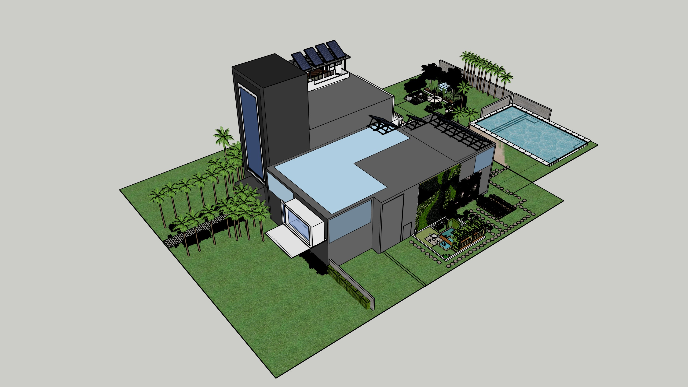

Design Tool: Sketchup
How can I create architecture that carries the essence of nature and the environment and aesthetics while being respectful to the environment around us?
In this project, I intertwine the beauty of nature and human creation together to create a harmonious connection between human and nature. Throughout this portfolio, I explore organic shapes, geometric shapes, and the structure of elements of nature. I recreated the adaptability, efficiency and the resilience of nature into these buildings. My artwork redefines the structure of architecture and its aesthetics, and breaks free from the traditions of architecture.